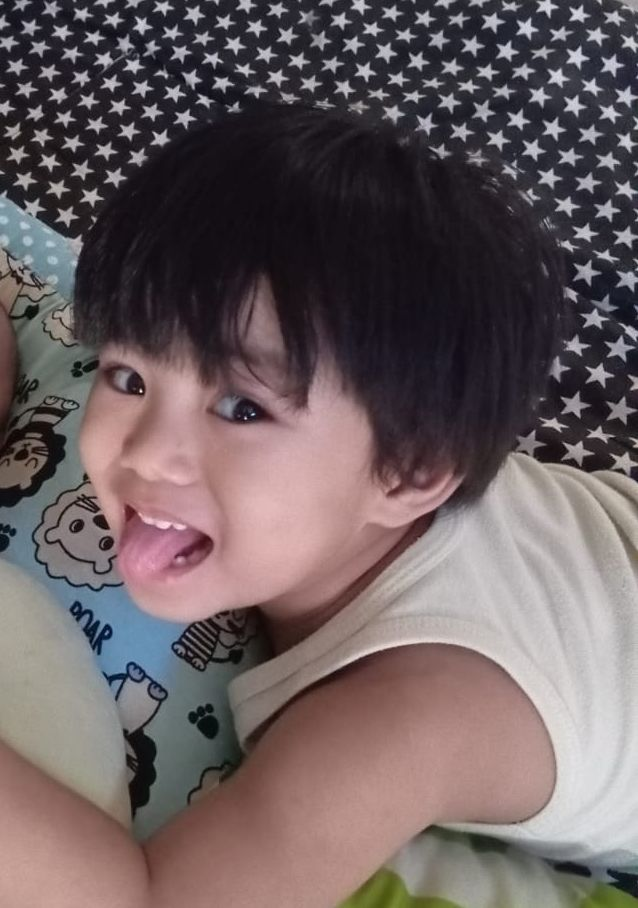
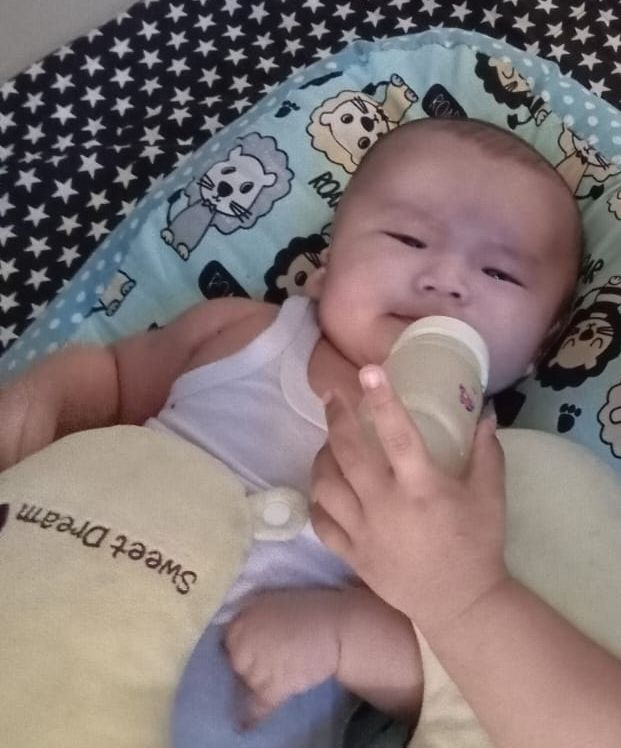

私の家族
Watashi no kazoku — Keluarga Saya
母
はは
Haha
Ibu
義父
ぎふ
Gifu
Ayah tiri
私
わたし
Watashi
長男（ちょうなん）
Chōnan
Anak laki-laki pertama

弟
おとうと
Otōto
次男（じなん）
Jinan
Anak laki-laki kedua

弟
おとうと
Otōto
三男（さんなん）
Sannan
Anak laki-laki ketiga
━ Garis Merah muda:
Hubungan sedarah antara Ibu dengan ketiga anak.
━ Garis Hitam:
Hubungan sedarah antara Ayah tiri dengan kedua adik.